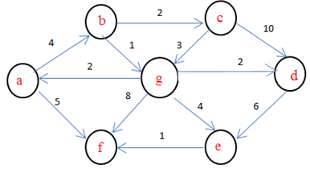

Q1) Which routing protocol has to be updated manually by the user?
OSPF
RIP
Static
all of the above
Q2) Which algorithm is used by the OSPF protocol?
Bellman Ford
Floydd Warshal
Djikstra
None of the above
Q3) Consider the following nodes

If b is the source node , what is the minimum distance selected by the OSPF to reach f as destination node?
8
9
4
6
Q4) RIP is a ____________ protocol.
Distance Vector Protocol
Path Vector Protocol
Link State
Routed protocol